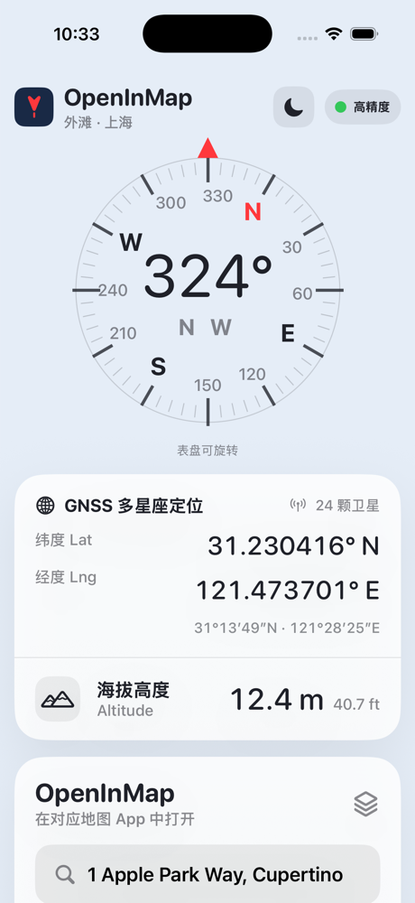
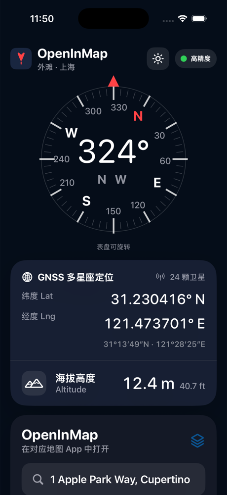
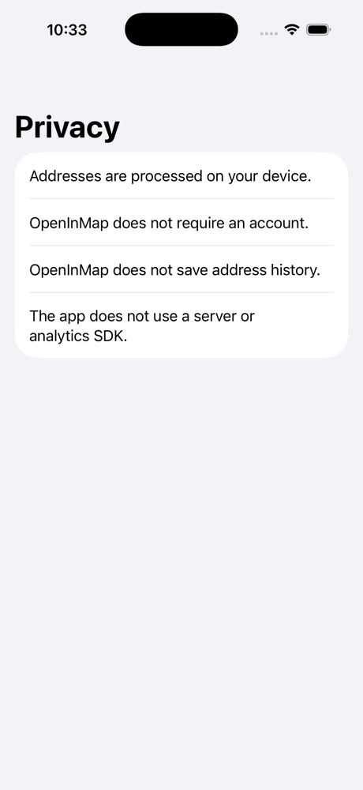

Compass Dashboard
See heading, GNSS latitude and longitude, altitude, and high-accuracy status in a clean light or dark dashboard.
A location utility for compass heading, GNSS coordinates, altitude, and opening the current place or typed coordinates in Apple Maps, Google Maps, Waze, Baidu Maps, Amap, or Tencent Maps.
See heading, GNSS latitude and longitude, altitude, and high-accuracy status in a clean light or dark dashboard.
Tap a map icon to open the current coordinate, typed coordinate, address, or POI in the map app you choose.
Supports WGS84, GCJ02, and BD09 conversion so Baidu Maps, Amap, and Tencent Maps receive the right coordinate system.



If you need help with OpenInMap, please contact us by email.
Last updated: June 24, 2026
OpenInMap is designed as a local utility. We do not collect, sell, rent, or share personal data.
If you allow location access, OpenInMap uses your current location on device to show coordinates, heading, altitude, and to open your current position in a selected map app. Location data is not uploaded to us.
When you share text, links, addresses, or coordinates to OpenInMap, the app uses that content locally to prepare a map launch URL.
Questions about privacy can be sent to mr.brightman@gmail.com.